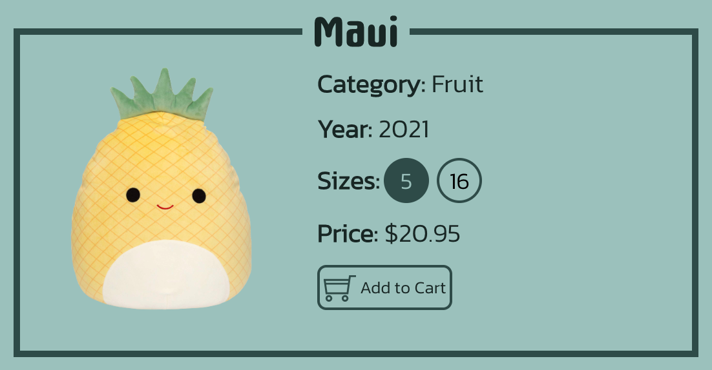
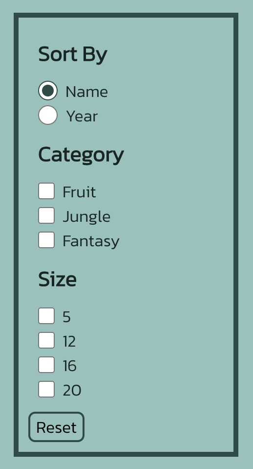
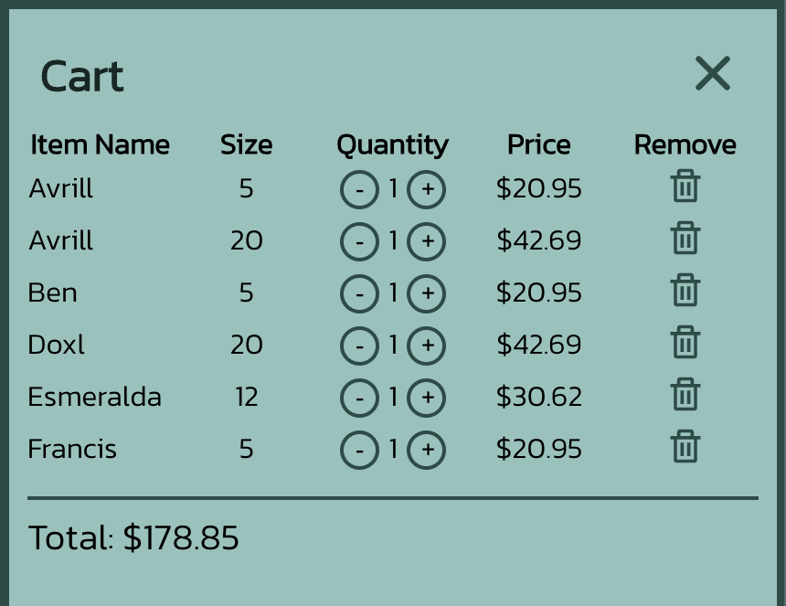

Development is a project creating an interactive interface, a Squishmallows site, that includes
a sorting feature, filtering feautres, a reset feature, and a cart feature. The first part of
the project,
The Goal and Value,
involved identifying the overarching goal of the site and the different features necessary to
achieve the goal. The second part of the project,
Usability Principles Considered,
involved identifying the important usability principles necessary to achieve the goal of the site,
and how exactly to incorporate these principles. The final part of the project involved using React
to create the site and providing and overarching view of how each feature was implemented.
The goal of this site is to aggreate a portion of all squishmallows so that people can view their
different
collectors details and the average prices of each of the different sizes. For anyone interested in
purchasing a squishmallow or multiple from certain categories or of certain sizes, they can easily find
those here.
The link to the deployed site can be found
here.
The Item Cards

Each squishmallow card is a compnent. The component contains the information (name, category, year,
sizes, price) for the particular squishmallow and an cart button that allows you to add the
squishmallow (of the selected size and price) to the cart.
All squishmallows are stored in a list which is primarily responsible for maintaining
the current price for the squishmallow depending on which size is selected. The filtering and
sorting takes objects from this list to create the new filtered/sorted list. This list is then used
to display the Squishmallow component on the screen.
Filtering and Sorting Categories

In terms of filtering, the user can filter based on category of squishmallow or based
on the available sizes. Each squishmallow on this page lies in one category only but can
come in a variety of sizes. When the user clicks on a filter button in the 'Category' section, the
categoryFilters state variable gets updated by adding the current filter parameter to the list. When
the user clicks on the filter buttons in the 'Size' section, the sizeFilters state variable gets
updated by adding the current filter parameter to the list.
In terms of sorting, the user can sort based on the name of the squishmallow
(this sorts in alphabetical order) or the year of the squishmallow (this sorts in
ascending order). When the user clicks on any of the sort buttons, the sortBy state variable gets
updated with the current sort parameter.
When these state changes occur, the variable containing the selected squishmallows also changes
based on the filters/sorting parameters and the page gets updated to show the selected
squishmallows.
The Aggregator

For the aggregator component of the site, I chose to implement a cart. The cart
keeps track of squishmallows, their size, the quantitiy, the price based on the item and quanitity,
and the total price of the cart.
When the user click the the cart button, the cartItems state variable gets updated with the current
squishmallow, the size, the price, and the quantity.
When the user clicks on the '-', '+', and 'Trash' buttons within each item in the cart,
the cartItems state variable gets updated with the current quantity or current items
in the cart.
When these state changes occur, the page and the cart get updated to show the squishmallow added to
the cart.